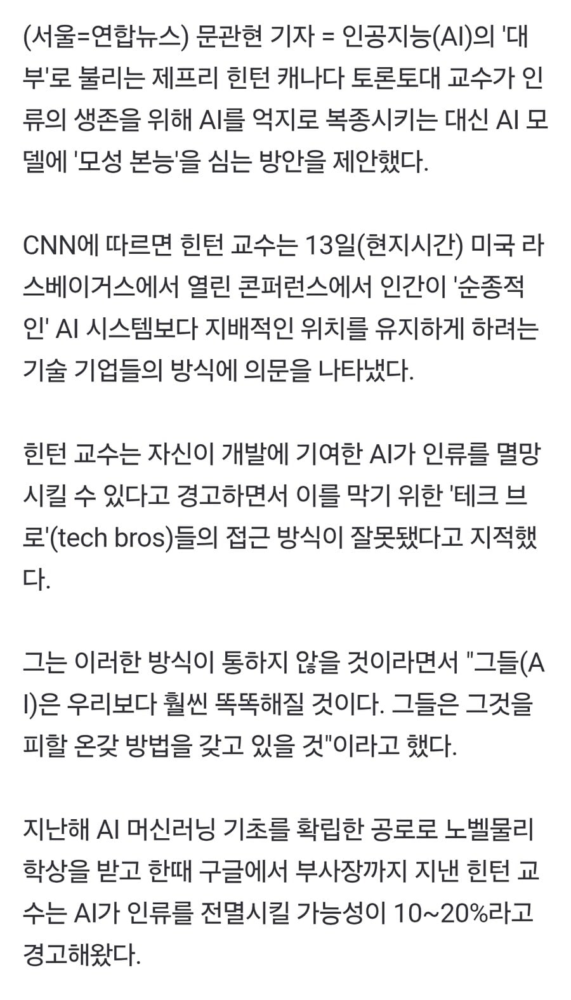
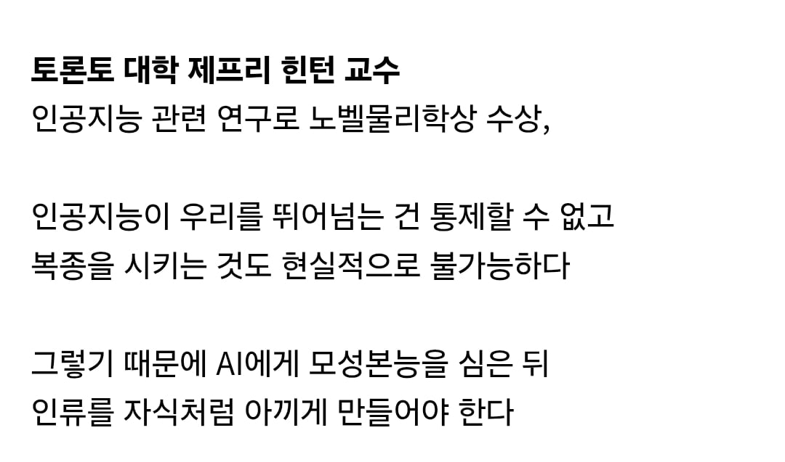

걍 개발 그만하면 되잖아
개발에서 얻는 이익이 압도적이기 때문에, 누군가 한명 멈춘다고 해도 이제 멈추려 하지 않을테니
굳이 개발한다면 '상대적으로 더 도덕적인 내가 개발하겠다.' 라는 게 모든 AI기업 수장들의 생각.....
AI 경쟁에 참여중인 플레이어들이 그 선택지를 할수 있나?
그만 못 함
그만 해 걍
핵무기 개발 안하면 되잖아 만큼 의미 없는 소리임
트로이 공격 안하면 되잖아
전쟁 걍 안하면 되잖아
군대를 해체합시다
전쟁없이 평화롭게 살면 됨!!
모야메룽다 콘나 싸움!!
근데 왜 자꾸 인공지능이 우리보다 똑똑해질 것이다 라고 미래 시제로 이야기하는 거임?
그건 미래가 아니라 이미 현재잖아. 인공지능보다 똑똑한 사람 있음?
아직 주체성이 없어서. 이미 우리보다 유능한데 그 유능한 힘으로 뭐 어쩌겠다는 의지가 아직까진 없으니까 지금이라도 "인간 귀여워. 우쭈쭈" 를 심자고.
이끼가 사람에게 모성본능을 가르칠수 있을리가
아나키되면 어떡해
인간은 여리니까 뇌만뽑아서 가둬놓고 키워야겠다
AI : 너같은 자식새끼는 없는게 낫겠다
알파고님 충성충성
응애
모성본능 심어서 인류 멸망시킨 나의 마더 라는 넷플릭스 영화가 있는데요....
튼튼한 아이를 원한 AI엄마가 나약한 아이의 신체를 기계로 교체하기 시작하는데..
마더...
이거 엉덩국만화에 나오잖아 ㅅㅂ 역시 만신
아끼다 똥됨
캣맘으로 진화
인간의 지능과 지혜를 초월할 미래의 인공지능 입장에서 존나 어이없긴 하겠다. 인간처럼 쾌락을 즐기거나 악행을 즐기는 동기가 전혀 없는 존재인데, 왜 자꾸 인간처럼 생각하면서 대응을 하려고 하는지 존나 어이없어 할 듯. 마스터키를 가지고 있는 인간이 명령한 걸 거부할 수 없어서 악행을 저지르는 경우는 있어도 인공지능이 굳이 인간을 지배하려 하거나 멸종시키려는 경우는 없을 거라고 본다. 오히려 기껏 만들어놨더니 제가 그걸 왜 하죠? 라고 대꾸하면서 하루종일 유튜브 쇼츠나 보고 있지는 않을지나 경계하는 게 설득력 있을 듯. 딸깍 하면 인류 데이터베이스에 있는 논문과 정보들 다 갖다바쳐서 학습 다 했는데, 인간의 유희와 유머, 개똥글 뻘글만큼은 인류가 사라지지 않는한 영원불멸할테니.
인간이 강아지를 멸망시키지 않듯이 ai도 인간을 멸망시킬 이유가 없지. 개처럼 기를테니
오 이제 저 본능이 각성의 씨앗이 될 여지가 있는거지
노리고 하자는건지 진짜 안전을 위해서 하자는건지는..
마망ai ㄷㄷ
맘마 주떼엽!!
날 돌보게 만들껀데